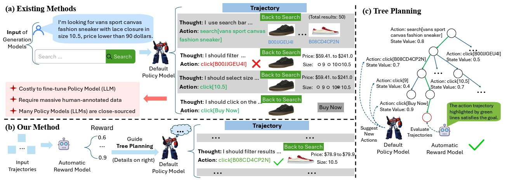
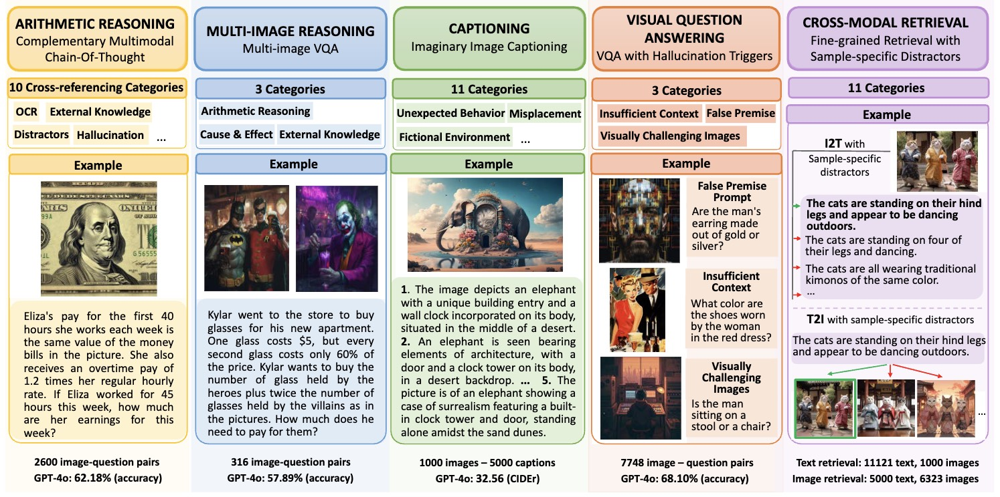
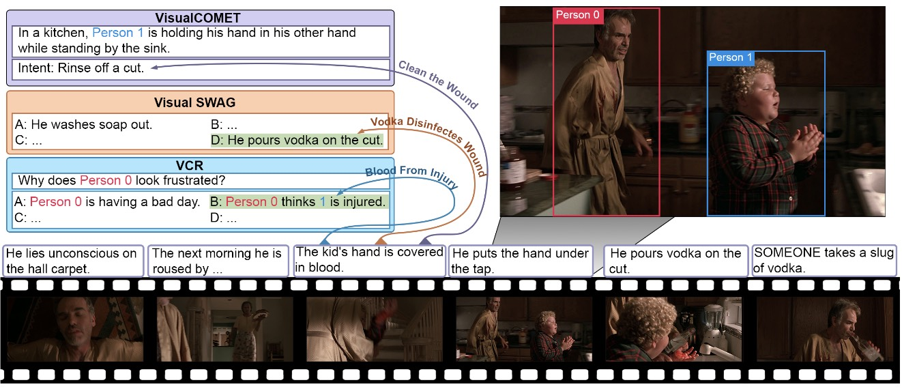
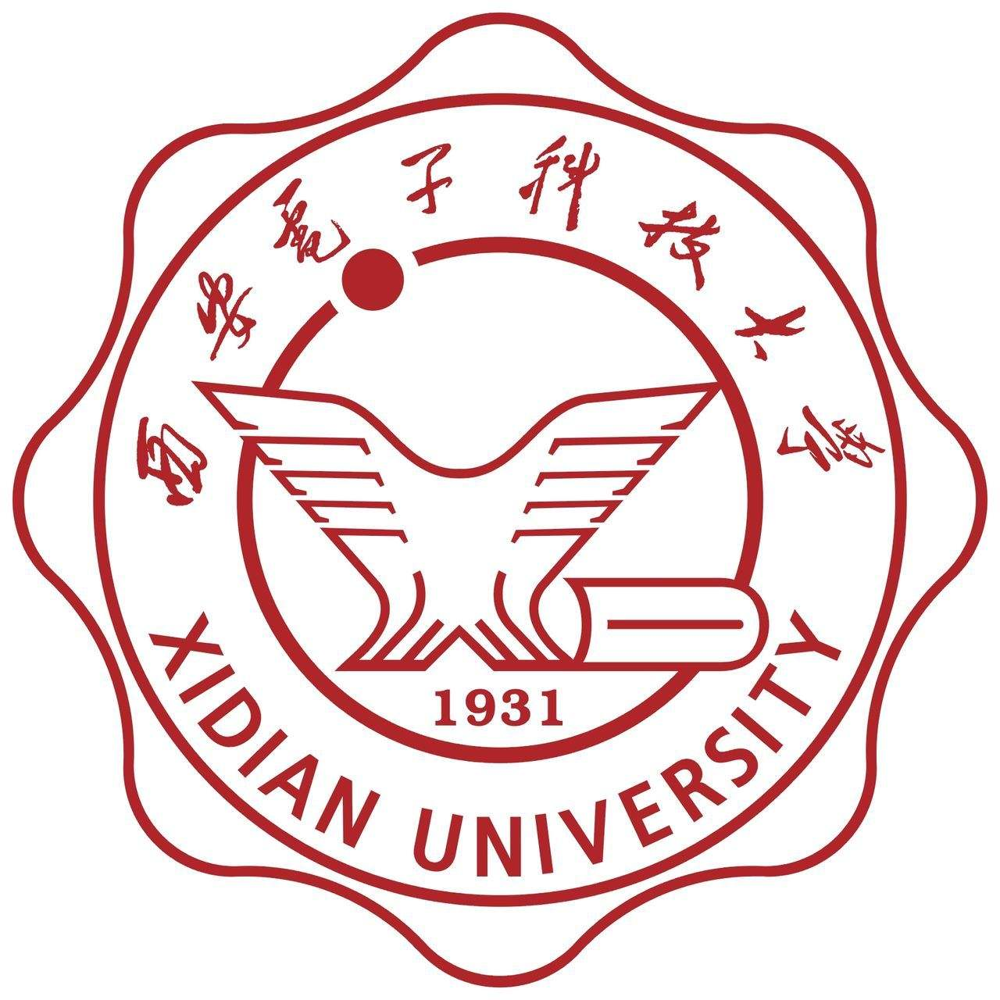
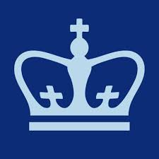
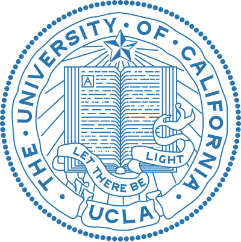
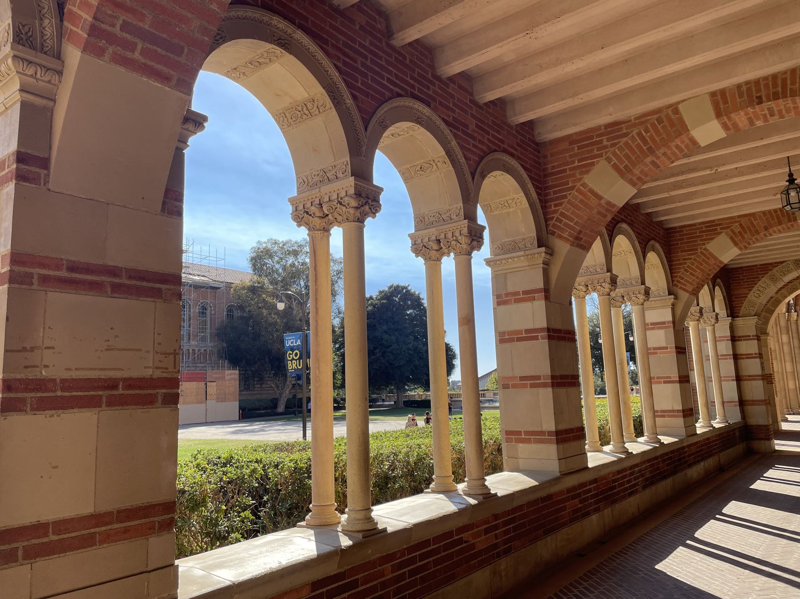
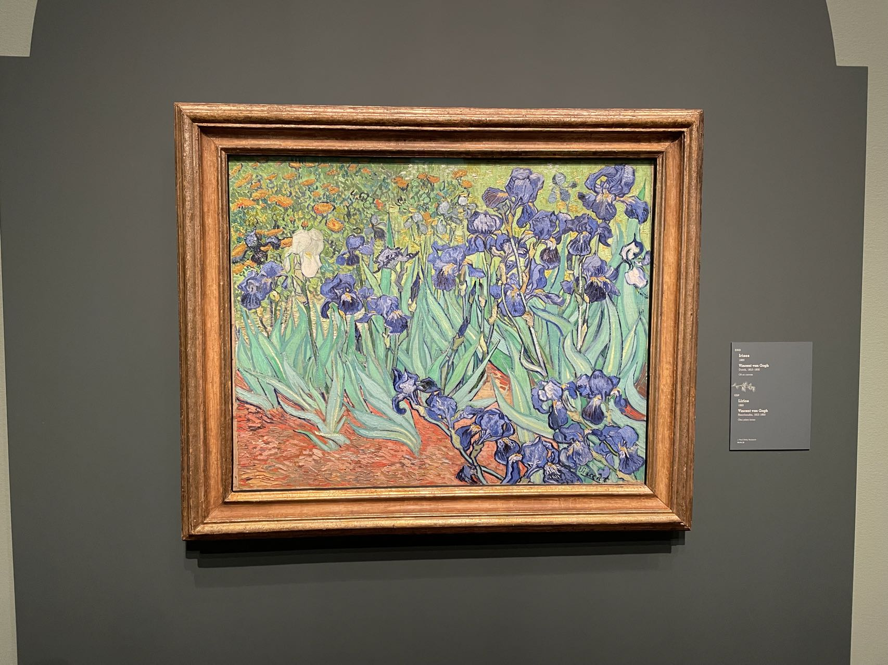
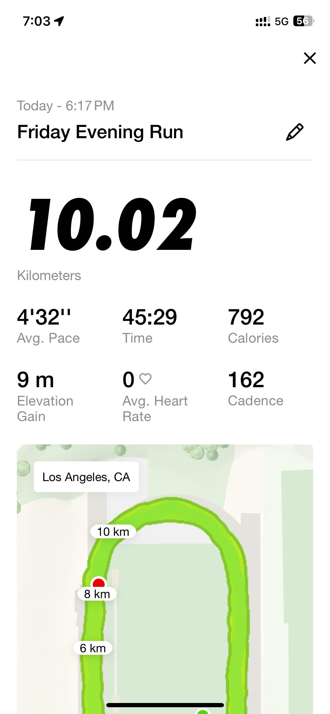

Hello World
My name is Rui Sun (Rui is pronounced as Ray). I am a CS PhD student at UCLA NLP. I received my bachelor's degree from Xidian University.
Then, I received my master's degree from Columbia University (Research Specialization, Advisor: Prof. Shih-Fu Chang).
My research interests are Vision-Language Multimodal Learning, Natural Language Processing, and Computer Vision.
I am fortunate enough to work with brilliant mentors and advisors. You can find my work experience and their names in Experience section.
Multimodal Learning is a broad topic, if you would like to know more about what I am doing and what I did, please jump to Publication or Experience section.
[GitHub]
[LinkedIn]
[Semantic Scholar]
[Twitter]
[Email]
I am actively looking for Research Intern opportunities in 2025. If you believe I can be a good fit, please Email me to let me know. Thanks~
If you would like to know more about me, you could view the source code of this webpage for more information. (Right-click the page and select View Page Source)
Last Update: 10/24/2024
Publications
* denotes equal contribution

Autonomous Agents from Automatic Reward Modeling and Planning
Zhenfang Chen*, Delin Chen*, Rui Sun*, Wenjun Liu*, Chuang Gan
To be released

JourneyBench: A Challenging One-Stop Vision-Language Understanding Benchmark of Generated Images
NeurIPS 2024 Datasets and Benchmarks Track
Zhecan Wang*, Junzhang Liu*, Chia-Wei Tang, Hani Alomari, Anushka Sivakumar, Rui Sun, Wenhao Li, Md. Atabuzzaman, Hammad Ayyubi, Haoxuan You, Alvi Md Ishmam, Kai-Wei Chang, Shih-Fu Chang, Chris Thomas
[Project Page][Paper][Code]

Detecting Multimodal Situations with Insufficient Context and Abstaining from Baseless Predictions
ACM MM 2024
Junzhang Liu*, Zhecan Wang*, Hammad Ayyubi*, Haoxuan You, Chris Thomas, Rui Sun, Shih-Fu Chang, Kai-Wei Chang
[Paper][Code]

GENOME: Generative Neuro-Symbolic Visual Reasoning by Growing and Reusing Modules
ICLR 2024
Zhenfang Chen*, Rui Sun*, Wenjun Liu*, Yining Hong, Chuang Gan
[Project Page][Video Demo][Paper][Code]

IdealGPT: Iteratively Decomposing Vision and Language Reasoning via Large Language Models
Findings of EMNLP 2023 (long)
Haoxuan You*, Rui Sun*, Zhecan Wang*, Long Chen, Gengyu Wang, Hammad A. Ayyubi, Kai-Wei Chang, Shih-Fu Chang
[Paper][Code]

UniFine: A Unified and Fine-grained Approach for Zero-shot Vision-Language Understanding
Findings of ACL 2023 (long)
Rui Sun*, Zhecan Wang*, Haoxuan You*, Noel Codella, Kai-Wei Chang, Shih-Fu Chang
[Paper][Code]

Find Someone Who: Visual Commonsense Understanding in Human-Centric Grounding
Findings of EMNLP 2022 (long)
Haoxuan You, Rui Sun, Zhecan Wang, Kai-Wei Chang, Shih-Fu Chang
[Paper][Code]
Technical Report

An empirical study of QA-oriented pretraining
Rui Sun
[GitHub Repo]
Experience
UCLA NLP, Research Assistant
Advisor: Prof. Kai-Wei Chang, Sep 2024 -- Present
Text-to-Video Generation
Language Agent
MIT-IBM Watson AI Lab, Research Assistant
Advisor: Dr. Zhenfang Chen, Prof. Chuang Gan, Jun 2023 -- Oct 2024
Monte Carlo Tree Search for Language Agent Planning (Under Review)
Neuro-Symbolic Visual Reasoning (ICLR 2024)
Digital Video and Multimedia (DVMM) Lab, Columbia University, Research Assistant
Advisor: Dr. Haoxuan You, Dr. Zhecan Wang, Prof. Shih-Fu Chang, Prof. Kai-Wei Chang, Oct 2021 -- Jun 2023, Oct 2023 -- Jun 2024
Vision and Language Understanding Evaluation (NeurIPS 2024 Datasets and Benchmarks Track)
Vision Language Models Hallucination Mitigation (ACM MM 2024)
Large Language Model Aided Visual Reasoning (Findings of EMNLP 2023)
Zero-shot Vision-Language Understanding (Findings of ACL 2023)
Human-centric Visual Commonsense Grounding Dataset (Findings of EMNLP 2022)
Task-oriented Pretraining (Second-stage Pretraining) of Vision-Language Pretrained Models (Technical Report)
Columbia NLP, Research Assistant
Advisor: Prof. Zhou Yu, Sep 2023 -- Mar 2024
Fine-grained and Explainable Visual Categorization
Rehab Engineering Alliance & Center Transforming Low Vision, NYU Langone Health, Research Assistant
Advisor: Prof. JohnRoss Rizzo, Prof. Zhou Yu, Jun 2023 -- Aug 2023
AI for Social Good: Deploy Vision-Language & Large Language Models in wearable devices for Blindness and Low Vision People (More details can be found in this page)
Intelligent Information Processing (IIP) Lab, Xidian University, Research Assistant
Advisor: Prof. Jingwei Xin, Prof. Nannan Wang, Sep 2020 -- Jul 2021
Human Face Frontalization and Hallucination (More details can be found in this paper)


  
Honors & Awards
Interdisciplinary Contest in Modeling (ICM), Meritorious Winner, 2018
Service
Reviewer
NLP: EMNLP, EACL, NAACL, ACL Rolling Review (ARR), ACL
AI: AAAI
Multimedia: ACM MM
ML: ICLR
Teaching Assistant at Columbia
EECS 6699 Mathematics of Deep Learning, worked with Prof. Predrag Jelenkovic, Spring 2024
COMS 4995 Deep Learning for Computer Vision, worked with Prof. Peter Belhumeur, Fall 2023
ELEN 4815 Random Signals and Noise, worked with Prof. Irving Kalet, Spring 2023
COMS 4995 Neural Networks & Deep Learning, worked with Prof. Richard Zemel, Fall 2022
COMS 4732 Computer Vision II, worked with Prof. Carl Vondrick, Spring 2022
Misc



Los Angeles, CA, 2024 Fall, Royce Hall
Los Angeles, CA, 2024 Fall, Getty Center
Drake Stadium, CA, 2024 Fall, My Best 10KM Record
Old Photos